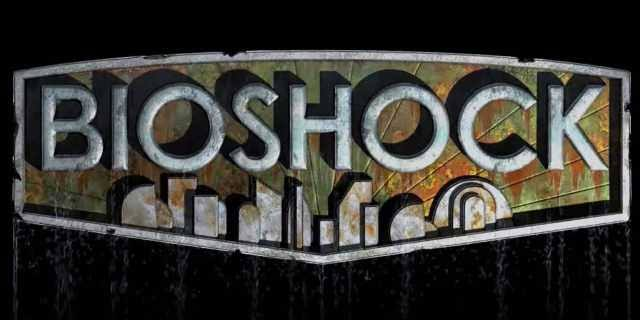

¿Que es BioShock?
BioShock es un videojuego de disparos en primera persona desarrollado por Irrational Games y publicado en 2007. Su historia combina acción, misterio y elementos de ciencia ficción.
La aventura comienza cuando el protagonista llega a Rapture, una ciudad construida debajo del océano atrlántico. Lo que parecía un lugar extraordinario se convierte en un sitio lleno de peligros y secretos.
